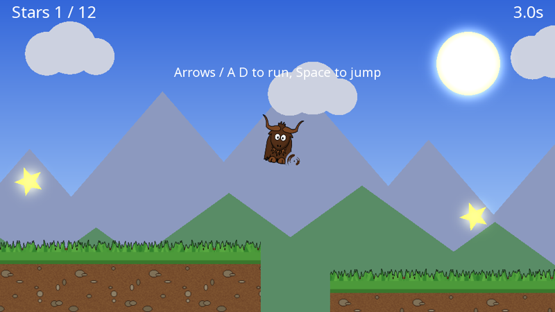
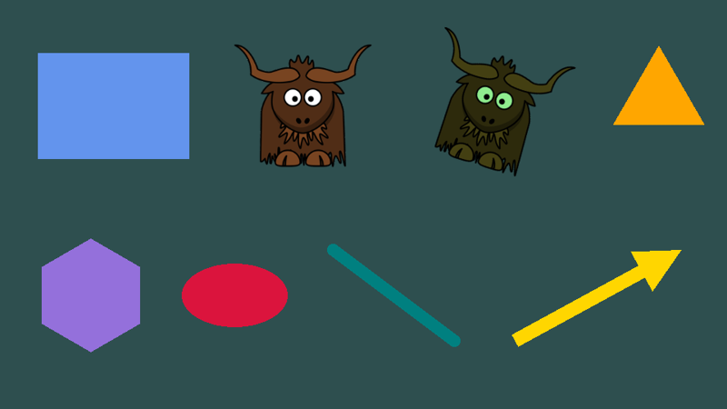
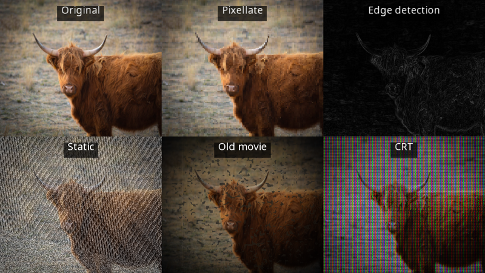
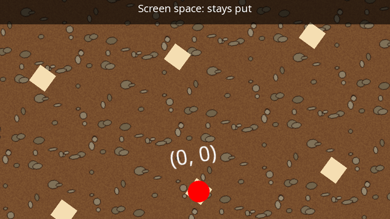
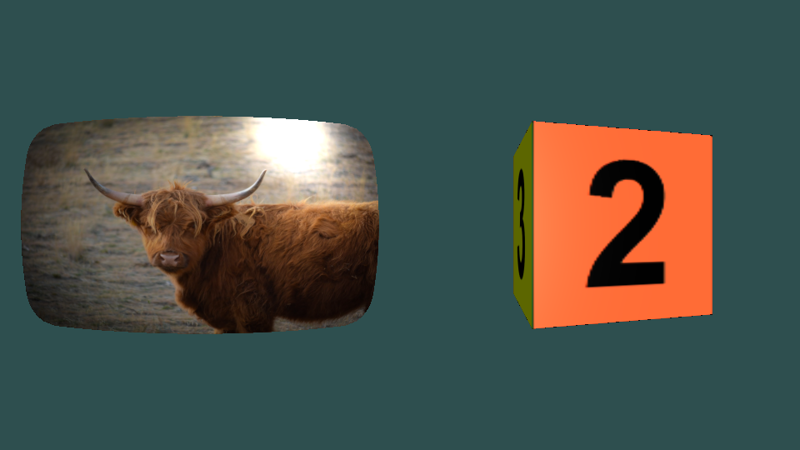

yak2D
Write a 2D game in plain C#. Run it on Windows, Linux and macOS.
yak2D is a small, code-first framework that gives you a window, a game loop, input, and a GPU rendering pipeline you can bend into almost any shape, all from one NuGet package with nothing else to install. There is no editor and no engine to fight: you write a class, and yak2D runs it.



Yak Run: the platform game you build, from an empty folder, in the four-part tutorial.
From nothing to a window in three commands
With the .NET 10 SDK installed, on any of the three platforms:
dotnet new console -n Hello && cd Hello
dotnet add package Yak2D
dotnet run # after pasting in the code below
This is a complete program. Put it in Program.cs:
using System.Numerics;
using Yak2D;
Launcher.Run(new Hello());
public class Hello : IApplication
{
private IDrawStage _stage;
private ICamera2D _camera;
public StartupConfig Configure() => StartupConfig.Default(960, 540, "Hello, yak2D", false);
public void OnStartup() { }
public bool CreateResources(IServices yak)
{
_stage = yak.Stages.CreateDrawStage();
_camera = yak.Cameras.CreateCamera2D(960, 540);
return true;
}
public void ProcessMessage(FrameworkMessage msg, IServices yak)
{
if (msg == FrameworkMessage.GraphicsDeviceRecreated) CreateResources(yak);
}
public bool Update(IServices yak, float seconds) => !yak.Input.WasKeyPressedThisFrame(KeyCode.Escape);
public void PreDrawing(IServices yak, float secondsSinceLastDraw, float secondsSinceLastUpdate) { }
public void Drawing(IDrawing draw, IFps fps, IInput input, ICoordinateTransforms transforms,
float secondsSinceLastDraw, float secondsSinceLastUpdate)
{
draw.Helpers.DrawColouredPoly(_stage, CoordinateSpace.Screen, Colour.Gold, Vector2.Zero, 5, 120.0f, 0.5f);
draw.DrawString(_stage, CoordinateSpace.Screen, "Hello, yak2D", Colour.White, 48.0f,
new Vector2(0.0f, -150.0f), TextJustify.Centre, 0.5f, 0);
}
public void Rendering(IRenderQueue q, IRenderTarget window)
{
q.ClearColour(window, Colour.DarkSlateBlue);
q.ClearDepth(window);
q.Draw(_stage, _camera, window);
}
public void Shutdown() { }
}
Nine methods, each called by yak2D at the right moment: set up in CreateResources(), react to input in Update(), say what to draw in Drawing(), and how to render it in Rendering(). That last split is yak2D's big idea. How yak2D works explains it in five minutes.
Where to start
| If you are... | Go to |
|---|---|
| New to yak2D? | Getting Started: install, create a project, open a window. About 10 minutes. |
| Learn by building | Yak Run: a complete platform game in four parts: sprites, physics, a scrolling level, then bloom, blur and colour effects. |
| Need it now? | Cookbook: sprite animation, screen shake, fades, parallax, particles, HUDs. Copy, paste, run. |
| Want the big picture? | How yak2D works: the handful of ideas everything else is built on. |
| Looking something up? | Cheat sheet for everyday calls on one page, the Manual for depth, and the API Reference for every type. |
What it can do
 |
2D drawing. Sprites, shapes, lines, arrows, polygons and text, sorted by layer and depth and batched for the GPU automatically. Or build your own triangles. Drawing guide |
 |
Effects, chained however you like. Bloom, blur, colour grading, pixellate, CRT, old movie, static, edge detection, distortion and mixing. Render into a surface, run it through any stages, in any order, and blend smoothly between settings. Effects guide |
 |
Cameras and resolution independence. Design at one virtual resolution and run at any window size. Zoom, rotate, follow, split the screen, and convert mouse positions into world space. Cameras guide |
 |
Beyond the built-ins. Your own GLSL shaders, compiled at runtime for every graphics API. 3D meshes with lighting. GPU-to-CPU readback. Raw NeoVeldrid access when you want to go all the way down. Custom shaders |
And the rest of what a game needs from its framework: keyboard, mouse and gamepads, fixed or variable time steps, full screen and window control, bitmap fonts, and Direct3D 11, Vulkan or OpenGL, switchable while running. See every feature.
Why yak2D?
- One package, three platforms.
dotnet add package Yak2Dbrings SDL2 and every native library with it. The same code runs on Windows, Linux and macOS, x64 and arm64. - It stays out of your way. No editor, no scene format, no entity system you have to adopt. Use any .NET library you like for audio, physics or networking.
- A pipeline, not a black box. Drawing and rendering are separate, so the scene you draw can be rendered twice, blurred, bloomed, mixed, distorted or wrapped round a mesh before it ever reaches the window.
- Documentation you can trust. Every example on this site is a real project, compiled against the latest release every time the docs are published. Screenshots are captured from the code shown.
Open source
yak2D is MIT licensed: github.com/AlzPatz/yak2d. It is built on NeoVeldrid, Silk.NET and SDL. Questions, bugs and ideas are welcome as GitHub issues. See What's new for the latest changes.